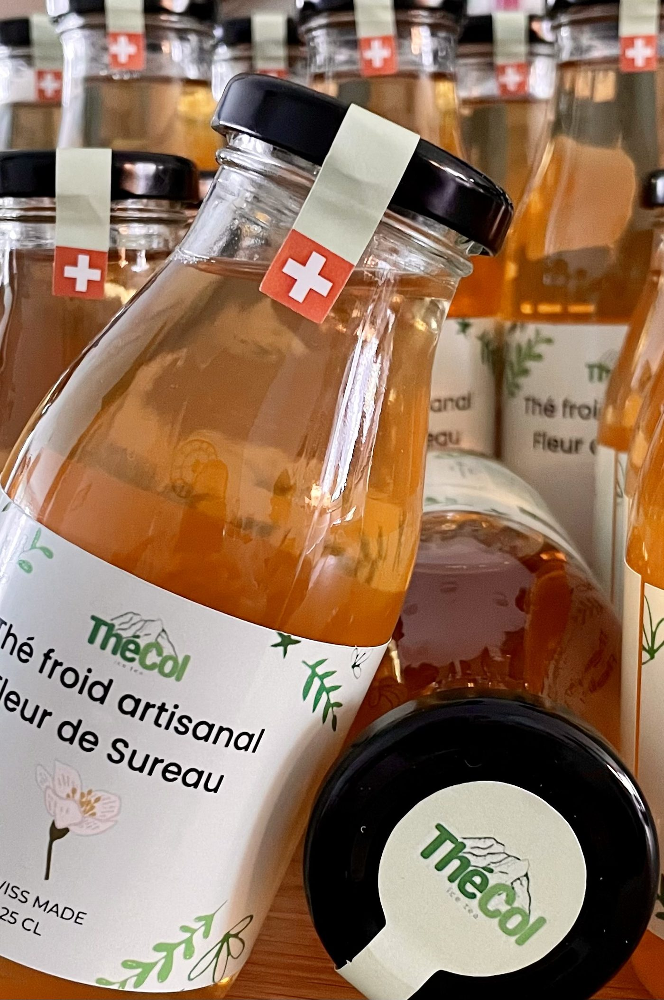
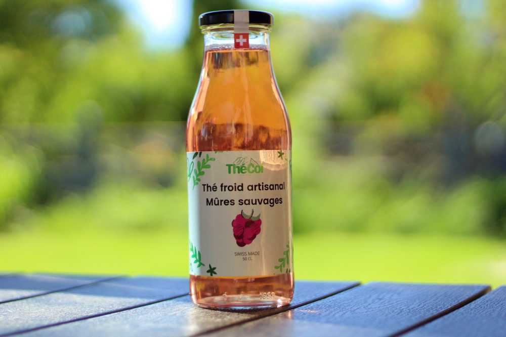
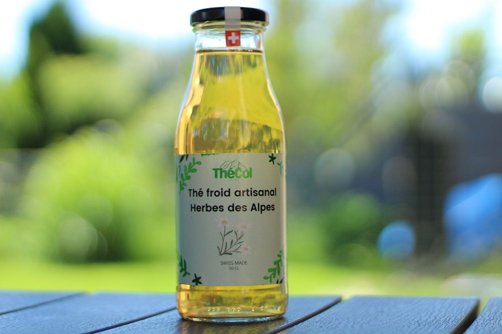
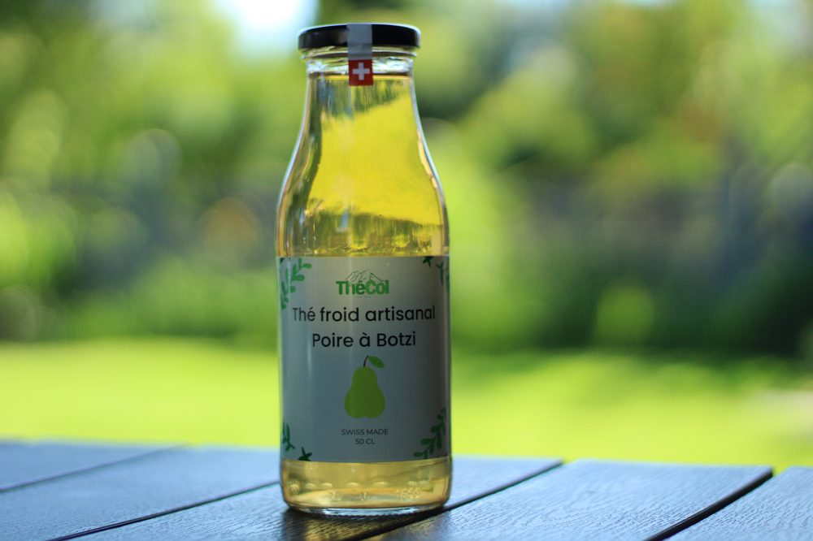
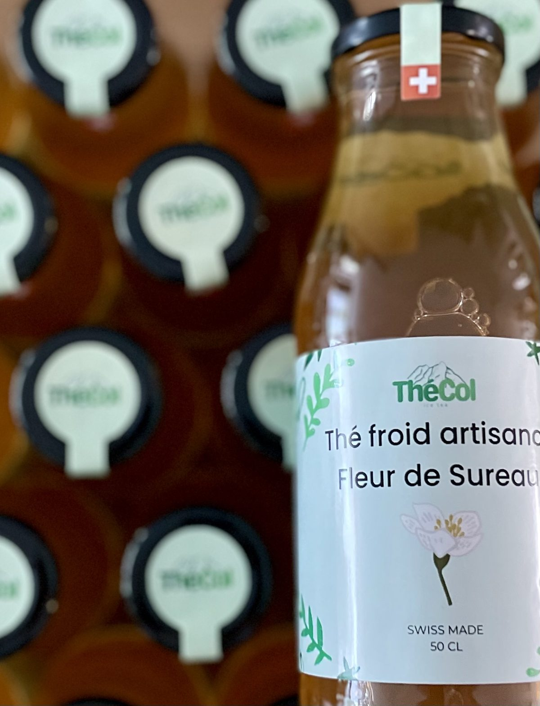
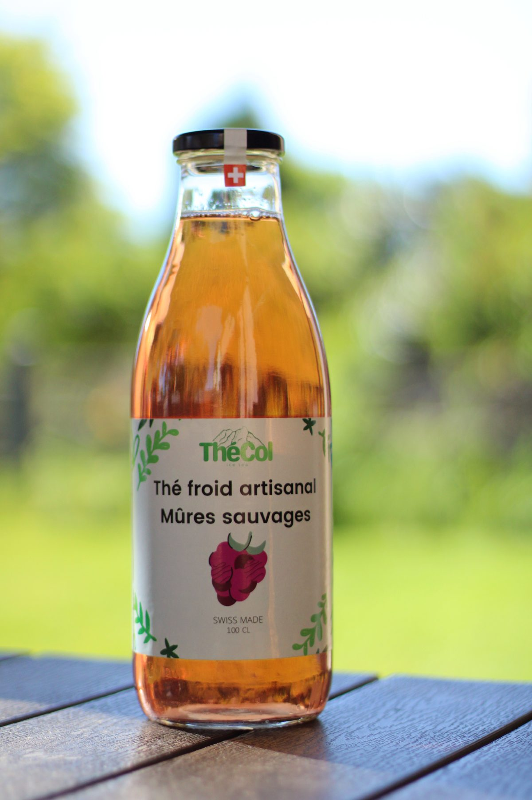

Produits locaux
Fruits, plantes, épices… Les terroirs fribourgeois et suisse sont nos sources d'inspiration et d'influence.
Quatre amis, un travail de maturité, et l'envie de faire briller le terroir de nos régions dans une bouteille de thé froid.
Fruits, plantes, épices… Les terroirs fribourgeois et suisse sont nos sources d'inspiration et d'influence.
Découvrez le thé froid pensé différemment. Notre marque de fabrique : des saveurs qui sortent des classiques.
On reconnaît un passionné à sa capacité à parler de son domaine des heures durant. Nous collaborons avec des partenaires impliqués qui nous fournissent les meilleurs ingrédients.
C'est en réalisant nous-mêmes la production artisanale que nous pouvons en garantir un contrôle total, et ainsi aspirer à la meilleure des qualités.
Arômes, extraits, concentrés, colorants, conservateurs, antioxydants ? Pas de ça chez nous — on a des frissons rien qu'en y pensant. Simplement goûtu, rafraîchissant et pas trop sucré.
Parce que c'est dans les détails que naît l'authenticité.

ContrôlePassionné tant par la cuisine que l'entrepreneuriat, Noah a trouvé en ThéCol l'alchimie parfaite, alliant création de recettes et gestion d'entreprise.
Personne ne relève les défis techniques aussi bien que Philippe. Sa capacité à transformer une idée en réel est un atout formidable pour ThéCol.
Besoin d'une idée ou d'un avis sur l'amélioration d'une ébauche ? Loris et sa vision imaginative et novatrice sont essentiels pour nous permettre de nous renouveler.
Il n'y a pas un problème que Luca ne puisse résoudre. Quoi qu'il arrive, son don pour approcher les défis sous l'angle idéal nous permet de progresser au quotidien.
Étudiants au collège Sainte-Croix à Fribourg, nous fondons une mini-entreprise dans le cadre de notre travail de maturité d'économie.
L'une des conditions du travail de maturité que nous venions de terminer est l'obligation de clôturer notre société en fin d'année scolaire.
Durant l'année scolaire 2022–2023, nous avons passé notre maturité gymnasiale, puis avons poursuivi nos études supérieures respectives.
À tout juste vingt ans, nous prenons rendez-vous chez un notaire pour ce moment à la fois bref et pourtant fort dans la vie de ThéCol.






Retrouvez nos cinq saveurs chez nos distributeurs partenaires, dans toute la Suisse romande.